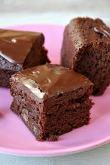

Brownies Recipe
Best Brownies Recipe

½ cup butter
1 cup white sugar
2 large eggs eggs
1 teaspoon vanilla extract
⅓ cup unsweetened cocoa powder
½ cup all-purpose flour
¼ teaspoon salt
¼ teaspoon baking powder
Frosting
3 tablespoons butter, softened
1 tablespoon honey
1 teaspoon vanilla extract
1 cup confectioners' sugar
Directions
Step 1
- Preheat oven to 350 degrees F (175 degrees C). Grease and flour an 8-inch square pan.
Step 2
- In a large saucepan, melt 1/2 cup butter. Remove from heat, and stir in sugar,
eggs, and 1 teaspoon vanilla. Beat in 1/3 cup cocoa, 1/2 cup flour, salt, and
baking powder. Spread batter into prepared pan.
Step 3
- Bake in preheated oven for 25 to 30 minutes. Do not overcook.
Step 4
- To Make Frosting: Combine 3 tablespoons softened butter, 3 tablespoons cocoa,
honey, 1 teaspoon vanilla extract, and 1 cup confectioners' sugar. Stir until
smooth. Frost brownies while they are still warm.
Nutrition Facts
per serving:
182.7 calories; protein 1.8g 4% DV; carbohydrates 25.7g 8% DV; fat 9g 14%
DV; cholesterol 44.2mg 15% DV; sodium 109.7mg 4% DV.